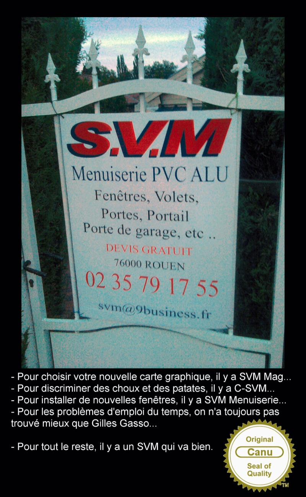

Recherche
Membre de l’équipe MERIT.ia (Méthodologies pour l’Efficacité, la Robustesse, l’Interprétabilité et la Transparence en IA) du LITIS. Mes travaux portent sur l’apprentissage statistique.
Thématiques
- Deep learning
- Kernel machines (méthodes à noyaux)
- MIP for machine learning (optimisation en nombres entiers)
- Model selection (sélection de modèle)
- Large scale factorisation for recommendation
Projets
- EulCat Porteur du projet
- RAIMo Chaire IA
- Deep in France ANR Coordination du projet.
- RSCM FUI
- Hermès FUI Factorisation pour la recommandation et la relation client personnalisée et contextualisée.
- Asap Emergent
- GEN-EASE CSOSG
- ClasSel Défi
- Cadi ANR Technologies logicielles
- KernSig ANR Blanc
